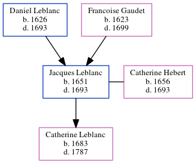

Jacques Leblanc 1651 - 1693
[ Home ] | [ Calendar ] | [ Surnames Index ] | [ Census Index ] | [ Family History ]The child of Daniel Leblanc and Francoise Gaudet, Jacques Leblanc, the 9 times great-grandfather of Michele Copp (née Phillips), was born in Port Royal, , Nova Scotia, Canada in 16511 and married Catherine Hebert (with whom he had 1 child, Catherine) in CA in 16731.
He died in 1693 in St Charles, Mines, New Brunswick, Canada.
Parents
- Daniel was born in 1626
- Francoise was born in 1623
Children
- Catherine was born in 1683
Citations
- U.S. and International Marriage Records, 1560-1900 Online publication - Provo, UT, USA: The Generations Network, Inc., 2004.Original data - This unique collection of records was extracted from a variety of sources including family group sheets and electronic databases. Originally, the information was deriv
Family Tree
Generated by ged2site. Last updated on Jun 6, 2024